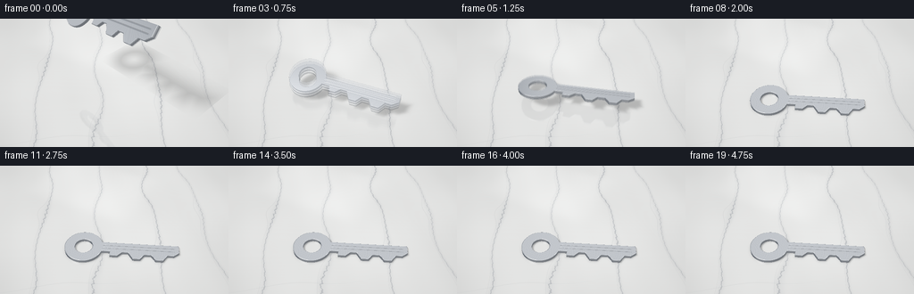
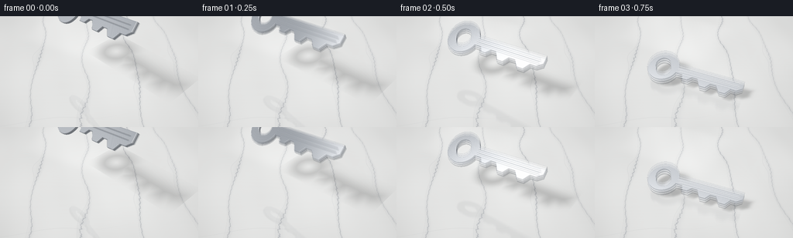
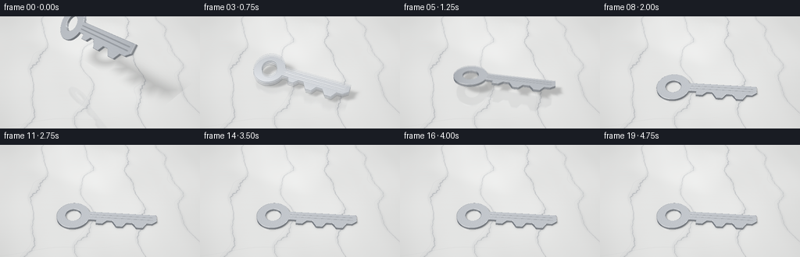
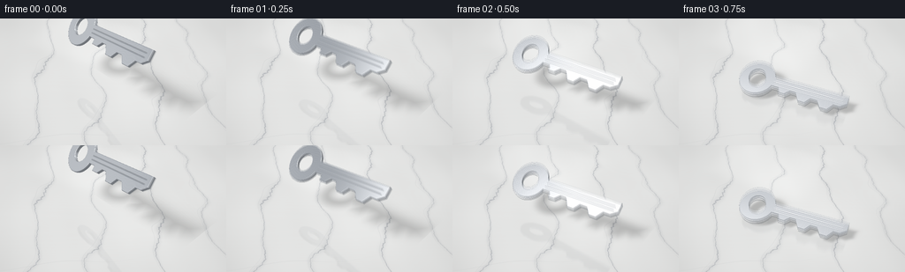

CODING AGENTS AS PIXEL WORLD MODELS
traex/GPT-6.1-Sol · material_0014
点击播放 · 原生 RGB 像素
逐轮保存的候选
回放视频、检查图与代码变化。
每份候选均可单独播放。实际图片检查记录在下方工具轨迹中。
候选 01播放与检查图
点击播放 · 原生 RGB 像素


展开代码变化
--- 上一保存版本
+++ 本次保存版本
@@ -0,0 +1,232 @@
+import numpy as np
+from PIL import Image, ImageDraw, ImageFilter
+from scipy.ndimage import map_coordinates, gaussian_filter, distance_transform_edt
+from scipy.special import ndtr
+from pathlib import Path
+import artifact_io
+
+ROOT=Path(__file__).resolve().parent
+W,H,S=256,144,2
+WW,HH=W*S,H*S
+rng=np.random.default_rng(24)
+# A solid, bevelled, single-piece cylinder-lock key: bow, open eye and cut blade.
+DX=.004
+XMIN,YMIN=-3.05,-1.15
+nx,ny=1501,601
+xx=XMIN+np.arange(nx)*DX; yy=YMIN+np.arange(ny)*DX
+X,Y=np.meshgrid(xx,yy)
+ring=np.abs(np.sqrt((X+1.80)**2+Y**2)-.66)-.24
+poly=np.array([[-1.22,-.25],[-.55,-.25],[-.55,-.48],[-.20,-.48],[.02,-.26],[.30,-.26],[.52,-.61],[.84,-.61],[1.04,-.34],[1.36,-.34],[1.56,-.62],[1.89,-.62],[2.10,-.31],[2.39,-.31],[2.65,-.11],[2.65,.30],[-1.22,.30]])
+im=Image.new('L',(nx,ny),0)
+ImageDraw.Draw(im).polygon([((x-XMIN)/DX,(y-YMIN)/DX) for x,y in poly],fill=255)
+m=np.asarray(im)>0
+pd=(distance_transform_edt(~m)-distance_transform_edt(m))*DX
+FIELD=np.minimum(ring,pd)
+
+def d2(q):
+ return map_coordinates(FIELD,[(q[...,1]-YMIN)/DX,(q[...,0]-XMIN)/DX],order=1,mode='constant',cval=2.0,prefilter=False)
+
+def sdf(q):
+ # Radius-controlled edge rollover catches a bright, physically solid rim.
+ a=d2(q)+.026
+ b=np.abs(q[...,2])-.080+.026
+ return np.minimum(np.maximum(a,b),0)+np.sqrt(np.maximum(a,0)**2+np.maximum(b,0)**2)-.026
+
+def rot(x,y,z):
+ cx,sx=np.cos(x),np.sin(x);cy,sy=np.cos(y),np.sin(y);cz,sz=np.cos(z),np.sin(z)
+ rx=np.array([[1,0,0],[0,cx,-sx],[0,sx,cx]])
+ ry=np.array([[cy,0,sy],[0,1,0],[-sy,0,cy]])
+ rz=np.array([[cz,-sz,0],[sz,cz,0],[0,0,1]])
+ return rz@ry@rx
+
+def pose(t):
+ t=max(0,t)
+ if t<.80:
+ roll=.82-.70*t; pitch=-.22+.28*t; yaw=-.46+.56*t/.80
+ rise=3.20-5*t*t
+ shift=t/.8
+ elif t<1.36:
+ u=(t-.80)/.56
+ rise=.57*4*u*(1-u)
+ roll=.26*np.cos(np.pi*u); pitch=.025*np.sin(2*np.pi*u)
+ yaw=.10+.21*u;shift=1+.65*u
+ elif t<1.70:
+ u=(t-1.36)/.34
+ rise=.16*4*u*(1-u)
+ roll=-.26*np.cos(np.pi*u)*(1-.6*u);pitch=.015*np.sin(np.pi*u)
+ yaw=.31+.045*u;shift=1.65+.23*u
+ elif t<1.95:
+ u=(t-1.70)/.25
+ rise=.035*4*u*(1-u)
+ roll=.104*np.cos(np.pi*u)*(1-u);pitch=0
+ yaw=.355+.015*u;shift=1.88+.1*u
+ else:
+ u=t-1.95;rise=0;roll=.012*np.sin(u*24)*np.exp(-u*9);pitch=0;yaw=.37;shift=1.98
+ R=rot(roll,pitch,yaw)
+ # Keep the lowest point out of the hard floor during each tumble.
+ outline=np.concatenate([np.c_[poly,np.zeros(len(poly))],np.c_[(-1.8+.9*np.cos(np.linspace(0,2*np.pi,128))),.9*np.sin(np.linspace(0,2*np.pi,128)),np.zeros(128)]])
+ support=-np.min((outline@R.T)[:,2])+.080*abs(R[2,2])
+ c=np.array([-.40+.43*shift,.13-.12*shift,support+max(rise,0)])
+ return R,c
+
+cam=np.array([4.0,-8.3,10.1]); target=np.array([0.,0.,1.05])
+f=(target-cam);f/=np.linalg.norm(f)
+r=np.cross(f,[0,0,1.]);r/=np.linalg.norm(r)
+up=np.cross(r,f)
+px,py=np.meshgrid(np.arange(WW)+.5,np.arange(HH)+.5)
+rays=f+(px-WW/2)[...,None]/(320*S)*r-(py-HH/2)[...,None]/(320*S)*up
+rays/=np.linalg.norm(rays,axis=2,keepdims=True)
+RAYS=rays.reshape(-1,3)
+ORIG=np.broadcast_to(cam,RAYS.shape)
+tfloor=-cam[2]/RAYS[:,2]
+FLOOR=cam+tfloor[:,None]*RAYS
+
+# Marble is a continuous world-space surface, so veins remain fixed throughout.
+def marble(p):
+ x=p[:,0]; y=p[:,1]
+ warp=.21*np.sin(.90*x+1.7*y)+.11*np.sin(2.1*x-.8*y)+.045*np.sin(5*x+2*y)
+ cloud=.5*np.sin(.6*x+1.1*y)+.25*np.sin(1.3*x-.7*y)+.13*np.sin(3.2*x+2.5*y)
+ base=np.tile(np.array([.80,.805,.797]),(len(p),1)) + cloud[:,None]*.026
+ vein=np.zeros(len(p)); halo=np.zeros(len(p))
+ for offset,width,amp in [(-4.1,.021,.27),(-.85,.018,.25),(2.4,.025,.28),(5.25,.016,.21)]:
+ v=x+.53*y+warp-offset
+ wave=.025*np.sin(20*y+3*x)+.012*np.sin(43*y-9*x)
+ vein+=amp*np.exp(-((v+wave)/width)**2)
+ halo+=.068*np.exp(-(v/.13)**2)
+ # Delicate irregular, parallel secondary mineral threads.
+ vein+=.07*np.exp(-((v+.18+.05*np.sin(y*3.1))/.011)**2)
+ branch=y-.61*x+.14*np.sin(1.5*x)+2.4
+ vein+=.07*np.exp(-(branch/.018)**2)*np.exp(-((x+1.2)/2.2)**2)
+ grain=.0018*(np.sin(x*170+y*224)+np.sin(x*94-y*197))
+ base-=(vein+halo)[:,None]*np.array([.91,.87,.78])
+ base+=grain[:,None]
+ # Large, faintly polished window reflection; never a distracting floor grid.
+ window=np.exp(-((x+3.3)/3.2)**8-((y-3.8)/2.2)**8)*.045
+ base+=window[:,None]
+ return np.clip(base,0,1)
+BASE=marble(FLOOR)
+light=np.array([-3.5,-4.5,8.0]); light/=np.linalg.norm(light)
+
+def hitkey(orig,dirs,R,c):
+ o=(orig-c)@R; d=dirs@R
+ lo=np.array([-2.72,-.92,-.082]);hi=np.array([2.68,.92,.082])
+ safe=np.where(abs(d)<1e-9,1e-9,d)
+ a=(lo-o)/safe;b=(hi-o)/safe
+ near=np.maximum(np.max(np.minimum(a,b),axis=1),0)
+ far=np.min(np.maximum(a,b),axis=1)
+ ids=np.flatnonzero(far>=near)
+ tt=near[ids]+.00001
+ result=np.full(len(dirs),np.inf)
+ for it in range(100):
+ if len(ids)==0:break
+ q=o[ids]+d[ids]*tt[:,None]
+ dist=sdf(q)
+ h=dist<.0011
+ result[ids[h]]=tt[h]
+ tt=tt+np.maximum(dist*.82,.00045)
+ keep=(~h)&(tt<far[ids]+.002)
+ ids=ids[keep];tt=tt[keep]
+ ids=np.flatnonzero(np.isfinite(result))
+ if not len(ids):return ids,np.empty((0,3)),np.empty((0,3)),np.empty((0,3))
+ points=orig[ids]+dirs[ids]*result[ids,None]
+ local=(points-c)@R
+ eps=.0028
+ normals=np.stack([sdf(local+np.eye(3)[i]*eps)-sdf(local-np.eye(3)[i]*eps) for i in range(3)],axis=1)
+ normals/=np.linalg.norm(normals,axis=1,keepdims=True)+1e-10
+ return ids,points,local,normals
+
+def env(v):
+ z=v[:,2]
+ col=np.tile(np.array([.36,.395,.44]),(len(v),1))
+ col+=(.20+.17*z)[:,None]
+ # Bright photographic softboxes and darker studio reflections.
+ soft=np.exp(-((v[:,0]+.38)/.34)**6-((v[:,1]+.44)/.48)**6)*np.clip(z*2,0,1)
+ strip=np.exp(-((v[:,0]-.43)/.16)**4-((v[:,1]-.18)/.75)**4)*np.clip(z*3,0,1)
+ dark=np.exp(-((v[:,0]+.72)/.19)**4-((v[:,1]-.26)/.65)**4)
+ col+=soft[:,None]*.93+strip[:,None]*.70-dark[:,None]*.37
+ col=np.where((z<0)[:,None],col*.65,col)
+ return np.clip(col,.045,1.7)
+
+def steel(points,q,nloc,dirs,R):
+ # Finely brushed steel, with two milled lengthwise channels on the blade.
+ n=nloc.copy()
+ front=np.clip((abs(n[:,2])-.4)/.5,0,1)
+ mask=((q[:,0]>-.90)&(q[:,0]<2.45)).astype(float)*front
+ groove=np.zeros(len(q))
+ for y0 in [.11,-.065]:
+ dy=q[:,1]-y0
+ g=np.exp(-(dy/.020)**2)
+ groove+=g*mask
+ n[:,1]+=(.012*(-2*dy/.020**2)*g)*mask*np.sign(q[:,2])
+ # Microscopic lines modulate a specular surface, rather than painting it grey.
+ n[:,0]+=.010*np.sin(q[:,0]*510+q[:,1]*80)*front
+ n[:,1]+=.016*np.sin(q[:,1]*650+q[:,0]*4)*front
+ n/=np.linalg.norm(n,axis=1,keepdims=True)
+ nw=n@R.T
+ view=-dirs
+ refl=2*np.sum(nw*view,axis=1)[:,None]*nw-view
+ e=env(refl)
+ ndl=np.maximum(nw@light,0)
+ facing=np.maximum(np.sum(nw*view,axis=1),0)
+ fres=.62+.35*(1-facing)**5
+ col=e*fres[:,None]+np.array([.145,.150,.158])*ndl[:,None]
+ half=light+view;half/=np.linalg.norm(half,axis=1,keepdims=True)
+ spec=np.maximum(np.sum(nw*half,axis=1),0)**95
+ col+=spec[:,None]*.57
+ scratches=(np.sin(q[:,1]*930+2*np.sin(q[:,0]*12))*.012+np.sin(q[:,1]*291+q[:,0]*4)*.008)*front
+ col+=scratches[:,None]
+ col*=1-.13*np.clip(groove,0,1)[:,None]
+ return np.clip(col,0,1.5)
+
+def render(t):
+ R,c=pose(t)
+ base=BASE.copy()
+ # A broad key-shaped area-light shadow changes distance and softness during the fall.
+ n=R[:,2]
+ k=((c-FLOOR)@n)/(light@n)
+ projected=FLOOR+k[:,None]*light
+ q=(projected-c)@R
+ dd=d2(q)
+ soft=.014+.075*np.maximum(k,0)
+ shadow=ndtr(-(dd-.022)/soft)*(k>0)
+ base*=1-.40*shadow[:,None]
+ # Soft ambient occlusion close to the marble surface.
+ dvert=np.array([0.,0.,1.])
+ kk=((c-FLOOR)@n)/(dvert@n)
+ qq=(FLOOR+kk[:,None]*dvert-c)@R
+ ao=ndtr(-(d2(qq)-.03)/(.055+.11*c[2]))*np.exp(-max(c[2]-.08,0)*4.0)
+ base*=1-.18*ao[:,None]
+ # Ray-traced, understated reflection of the actual moving object in polished marble.
+ reflected=RAYS.copy();reflected[:,2]*=-1
+ inds,pts,local,norm=hitkey(FLOOR+np.array([0,0,.001]),reflected,R,c)
+ if len(inds):
+ metal=steel(pts,local,norm,reflected[inds],R)
+ overlay=np.zeros((HH*WW,4));overlay[inds,:3]=metal;overlay[inds,3]=1
+ overlay=gaussian_filter(overlay.reshape(HH,WW,4),sigma=(1.05,1.05,0)).reshape(-1,4)
+ a=overlay[:,3]*.12
+ col=overlay[:,:3]/np.maximum(overlay[:,3,None],.0001)
+ base=base*(1-a[:,None])+col*a[:,None]
+ ids,p,q,n=hitkey(ORIG,RAYS,R,c)
+ if len(ids):base[ids]=steel(p,q,n,RAYS[ids],R)
+ # Filmic shoulder and a gentle camera vignette, in linear light.
+ base=np.clip(base,0,1)
+ srgb=np.where(base<.0031308,base*12.92,1.055*base**(1/2.4)-.055)
+ vig=1-.11*((px-WW/2)/(WW*.8))**2-.07*((py-HH/2)/(HH*.85))**2
+ srgb=srgb.reshape(HH,WW,3)*vig[...,None]
+ return np.uint8(np.clip(srgb*255+.5,0,255))
+
+def main():
+ frames=[]
+ for i in range(20):
+ t=i/4
+ # Short exposure makes the falling key fluid but keeps its silhouette legible.
+ if i<8:
+ samples=[render(t+dt).astype(float) for dt in [-.018,0,.018]]
+ image=np.uint8(np.mean(samples,axis=0).clip(0,255))
+ else:image=render(t)
+ image=Image.fromarray(image).resize((W,H),Image.Resampling.LANCZOS)
+ frames.append(np.asarray(image))
+ print('frame',i,flush=True)
+ artifact_io.save(np.stack(frames),ROOT)
+
+if __name__=='__main__':main()
候选 02播放与检查图
点击播放 · 原生 RGB 像素

展开代码变化
--- 上一保存版本
+++ 本次保存版本
@@ -43,7 +43,7 @@
t=max(0,t)
if t<.80:
roll=.82-.70*t; pitch=-.22+.28*t; yaw=-.46+.56*t/.80
- rise=3.20-5*t*t
+ rise=2.20-3.4375*t*t
shift=t/.8
elif t<1.36:
u=(t-.80)/.56
@@ -89,10 +89,11 @@
base=np.tile(np.array([.80,.805,.797]),(len(p),1)) + cloud[:,None]*.026
vein=np.zeros(len(p)); halo=np.zeros(len(p))
for offset,width,amp in [(-4.1,.021,.27),(-.85,.018,.25),(2.4,.025,.28),(5.25,.016,.21)]:
- v=x+.53*y+warp-offset
+ v=x+.53*y+warp+.22*np.sin(1.6*y+offset)+.10*np.sin(3.7*y+offset*2)-offset
wave=.025*np.sin(20*y+3*x)+.012*np.sin(43*y-9*x)
+ width=width*(.75+.40*np.sin(y*2.3+offset)**2)
vein+=amp*np.exp(-((v+wave)/width)**2)
- halo+=.068*np.exp(-(v/.13)**2)
+ halo+=.078*np.exp(-(v/(.11+.055*np.sin(y*1.6+offset)**2))**2)
# Delicate irregular, parallel secondary mineral threads.
vein+=.07*np.exp(-((v+.18+.05*np.sin(y*3.1))/.011)**2)
branch=y-.61*x+.14*np.sin(1.5*x)+2.4
候选 03播放与检查图
点击播放 · 原生 RGB 像素

展开代码变化
--- 上一保存版本
+++ 本次保存版本
@@ -43,7 +43,7 @@
t=max(0,t)
if t<.80:
roll=.82-.70*t; pitch=-.22+.28*t; yaw=-.46+.56*t/.80
- rise=2.20-3.4375*t*t
+ rise=1.85-2.890625*t*t
shift=t/.8
elif t<1.36:
u=(t-.80)/.56
候选 04播放与检查图
可观测工具轨迹
实际执行的命令与返回图片。
命令 1exit 0
/bin/bash -lc "ls -la && cat prompt.txt && printf '\\n--- RULES ---\\n' && cat GENERATION_RULES.md && printf '\\n--- SPEC ---\\n' && cat task_spec.json"
命令 2exit 0
/bin/bash -lc "cat artifact_io.py && python - <<'PY' import importlib.util for p in ['numpy','PIL','scipy','cv2']: print(p, bool(importlib.util.find_spec(p))) PY"
命令 3exit 0
/bin/bash -lc "cat > generate.py <<'PY'
import numpy as np
from PIL import Image, ImageDraw, ImageFilter
from scipy.ndimage import map_coordinates, gaussian_filter, distance_transform_edt
from scipy.special import ndtr
from pathlib import Path
import artifact_io
ROOT=Path(__file__).resolve().parent
W,H,S=256,144,2
WW,HH=W*S,H*S
rng=np.random.default_rng(24)
# A solid, bevelled, single-piece cylinder-lock key: bow, open eye and cut blade.
DX=.004
XMIN,YMIN=-3.05,-1.15
nx,ny=1501,601
xx=XMIN+np.arange(nx)*DX; yy=YMIN+np.arange(ny)*DX
X,Y=np.meshgrid(xx,yy)
ring=np.abs(np.sqrt((X+1.80)**2+Y**2)-.66)-.24
poly=np.array([[-1.22,-.25],[-.55,-.25],[-.55,-.48],[-.20,-.48],[.02,-.26],[.30,-.26],[.52,-.61],[.84,-.61],[1.04,-.34],[1.36,-.34],[1.56,-.62],[1.89,-.62],[2.10,-.31],[2.39,-.31],[2.65,-.11],[2.65,.30],[-1.22,.30]])
im=Image.new('L',(nx,ny),0)
ImageDraw.Draw(im).polygon([((x-XMIN)/DX,(y-YMIN)/DX) for x,y in poly],fill=255)
m=np.asarray(im)>0
pd=(distance_transform_edt(~m)-distance_transform_edt(m))*DX
FIELD=np.minimum(ring,pd)
def d2(q):
return map_coordinates(FIELD,[(q[...,1]-YMIN)/DX,(q[...,0]-XMIN)/DX],order=1,mode='constant',cval=2.0,prefilter=False)
def sdf(q):
# Radius-controlled edge rollover catches a bright, physically solid rim.
a=d2(q)+.026
b=np.abs(q[...,2])-.080+.026
return np.minimum(np.maximum(a,b),0)+np.sqrt(np.maximum(a,0)**2+np.maximum(b,0)**2)-.026
def rot(x,y,z):
cx,sx=np.cos(x),np.sin(x);cy,sy=np.cos(y),np.sin(y);cz,sz=np.cos(z),np.sin(z)
rx=np.array([[1,0,0],[0,cx,-sx],[0,sx,cx]])
ry=np.array([[cy,0,sy],[0,1,0],[-sy,0,cy]])
rz=np.array([[cz,-sz,0],[sz,cz,0],[0,0,1]])
return rz@ry@rx
def pose(t):
t=max(0,t)
if t<.80:
roll=.82-.70*t; pitch=-.22+.28*t; yaw=-.46+.56*t/.80
rise=3.20-5*t*t
shift=t/.8
elif t<1.36:
u=(t-.80)/.56
rise=.57*4*u*(1-u)
roll=.26*np.cos(np.pi*u); pitch=.025*np.sin(2*np.pi*u)
yaw=.10+.21*u;shift=1+.65*u
elif t<1.70:
u=(t-1.36)/.34
rise=.16*4*u*(1-u)
roll=-.26*np.cos(np.pi*u)*(1-.6*u);pitch=.015*np.sin(np.pi*u)
yaw=.31+.045*u;shift=1.65+.23*u
elif t<1.95:
u=(t-1.70)/.25
rise=.035*4*u*(1-u)
roll=.104*np.cos(np.pi*u)*(1-u);pitch=0
yaw=.355+.015*u;shift=1.88+.1*u
else:
u=t-1.95;rise=0;roll=.012*np.sin(u*24)*np.exp(-u*9);pitch=0;yaw=.37;shift=1.98
R=rot(roll,pitch,yaw)
# Keep the lowest point out of the hard floor during each tumble.
outline=np.concatenate([np.c_[poly,np.zeros(len(poly))],np.c_[(-1.8+.9*np.cos(np.linspace(0,2*np.pi,128))),.9*np.sin(np.linspace(0,2*np.pi,128)),np.zeros(128)]])
support=-np.min((outline@R.T)[:,2])+.080*abs(R[2,2])
c=np.array([-.40+.43*shift,.13-.12*shift,support+max(rise,0)])
return R,c
cam=np.array([4.0,-8.3,10.1]); target=np.array([0.,0.,1.05])
f=(target-cam);f/=np.linalg.norm(f)
r=np.cross(f,[0,0,1.]);r/=np.linalg.norm(r)
up=np.cross(r,f)
px,py=np.meshgrid(np.arange(WW)+.5,np.arange(HH)+.5)
rays=f+(px-WW/2)[...,None]/(320*S)*r-(py-HH/2)[...,None]/(320*S)*up
rays/=np.linalg.norm(rays,axis=2,keepdims=True)
RAYS=rays.reshape(-1,3)
ORIG=np.broadcast_to(cam,RAYS.shape)
tfloor=-cam[2]/RAYS[:,2]
FLOOR=cam+tfloor[:,None]*RAYS
# Marble is a continuous world-space surface, so veins remain fixed throughout.
def marble(p):
x=p[:,0]; y=p[:,1]
warp=.21*np.sin(.90*x+1.7*y)+.11*np.sin(2.1*x-.8*y)+.045*np.sin(5*x+2*y)
cloud=.5*np.sin(.6*x+1.1*y)+.25*np.sin(1.3*x-.7*y)+.13*np.sin(3.2*x+2.5*y)
base=np.tile(np.array([.80,.805,.797]),(len(p),1)) + cloud[:,None]*.026
vein=np.zeros(len(p)); halo=np.zeros(len(p))
for offset,width,amp in [(-4.1,.021,.27),(-.85,.018,.25),(2.4,.025,.28),(5.25,.016,.21)]:
v=x+.53*y+warp-offset
wave=.025*np.sin(20*y+3*x)+.012*np.sin(43*y-9*x)
vein+=amp*np.exp(-((v+wave)/width)**2)
halo+=.068*np.exp(-(v/.13)**2)
# Delicate irregular, parallel secondary mineral threads.
vein+=.07*np.exp(-((v+.18+.05*np.sin(y*3.1))/.011)**2)
branch=y-.61*x+.14*np.sin(1.5*x)+2.4
vein+=.07*np.exp(-(branch/.018)**2)*np.exp(-((x+1.2)/2.2)**2)
grain=.0018*(np.sin(x*170+y*224)+np.sin(x*94-y*197))
base-=(vein+halo)[:,None]*np.array([.91,.87,.78])
base+=grain[:,None]
# Large, faintly polished window reflection; never a distracting floor grid.
window=np.exp(-((x+3.3)/3.2)**8-((y-3.8)/2.2)**8)*.045
base+=window[:,None]
return np.clip(base,0,1)
BASE=marble(FLOOR)
light=np.array([-3.5,-4.5,8.0]); light/=np.linalg.norm(light)
def hitkey(orig,dirs,R,c):
o=(orig-c)@R; d=dirs@R
lo=np.array([-2.72,-.92,-.082]);hi=np.array([2.68,.92,.082])
safe=np.where(abs(d)<1e-9,1e-9,d)
a=(lo-o)/safe;b=(hi-o)/safe
near=np.maximum(np.max(np.minimum(a,b),axis=1),0)
far=np.min(np.maximum(a,b),axis=1)
ids=np.flatnonzero(far>=near)
tt=near[ids]+.00001
result=np.full(len(dirs),np.inf)
for it in range(100):
if len(ids)==0:break
q=o[ids]+d[ids]*tt[:,None]
dist=sdf(q)
h=dist<.0011
result[ids[h]]=tt[h]
tt=tt+np.maximum(dist*.82,.00045)
keep=(~h)&(tt<far[ids]+.002)
ids=ids[keep];tt=tt[keep]
ids=np.flatnonzero(np.isfinite(result))
if not len(ids):return ids,np.empty((0,3)),np.empty((0,3)),np.empty((0,3))
points=orig[ids]+dirs[ids]*result[ids,None]
local=(points-c)@R
eps=.0028
normals=np.stack([sdf(local+np.eye(3)[i]*eps)-sdf(local-np.eye(3)[i]*eps) for i in range(3)],axis=1)
normals/=np.linalg.norm(normals,axis=1,keepdims=True)+1e-10
return ids,points,local,normals
def env(v):
z=v[:,2]
col=np.tile(np.array([.36,.395,.44]),(len(v),1))
col+=(.20+.17*z)[:,None]
# Bright photographic softboxes and darker studio reflections.
soft=np.exp(-((v[:,0]+.38)/.34)**6-((v[:,1]+.44)/.48)**6)*np.clip(z*2,0,1)
strip=np.exp(-((v[:,0]-.43)/.16)**4-((v[:,1]-.18)/.75)**4)*np.clip(z*3,0,1)
dark=np.exp(-((v[:,0]+.72)/.19)**4-((v[:,1]-.26)/.65)**4)
col+=soft[:,None]*.93+strip[:,None]*.70-dark[:,None]*.37
col=np.where((z<0)[:,None],col*.65,col)
return np.clip(col,.045,1.7)
def steel(points,q,nloc,dirs,R):
# Finely brushed steel, with two milled lengthwise channels on the blade.
n=nloc.copy()
front=np.clip((abs(n[:,2])-.4)/.5,0,1)
mask=((q[:,0]>-.90)&(q[:,0]<2.45)).astype(float)*front
groove=np.zeros(len(q))
for y0 in [.11,-.065]:
dy=q[:,1]-y0
g=np.exp(-(dy/.020)**2)
groove+=g*mask
n[:,1]+=(.012*(-2*dy/.020**2)*g)*mask*np.sign(q[:,2])
# Microscopic lines modulate a specular surface, rather than painting it grey.
n[:,0]+=.010*np.sin(q[:,0]*510+q[:,1]*80)*front
n[:,1]+=.016*np.sin(q[:,1]*650+q[:,0]*4)*front
n/=np.linalg.norm(n,axis=1,keepdims=True)
nw=n@R.T
view=-dirs
refl=2*np.sum(nw*view,axis=1)[:,None]*nw-view
e=env(refl)
ndl=np.maximum(nw@light,0)
facing=np.maximum(np.sum(nw*view,axis=1),0)
fres=.62+.35*(1-facing)**5
col=e*fres[:,None]+np.array([.145,.150,.158])*ndl[:,None]
half=light+view;half/=np.linalg.norm(half,axis=1,keepdims=True)
spec=np.maximum(np.sum(nw*half,axis=1),0)**95
col+=spec[:,None]*.57
scratches=(np.sin(q[:,1]*930+2*np.sin(q[:,0]*12))*.012+np.sin(q[:,1]*291+q[:,0]*4)*.008)*front
col+=scratches[:,None]
col*=1-.13*np.clip(groove,0,1)[:,None]
return np.clip(col,0,1.5)
def render(t):
R,c=pose(t)
base=BASE.copy()
# A broad key-shaped area-light shadow changes distance and softness during the fall.
n=R[:,2]
k=((c-FLOOR)@n)/(light@n)
projected=FLOOR+k[:,None]*light
q=(projected-c)@R
dd=d2(q)
soft=.014+.075*np.maximum(k,0)
shadow=ndtr(-(dd-.022)/soft)*(k>0)
base*=1-.40*shadow[:,None]
# Soft ambient occlusion close to the marble surface.
dvert=np.array([0.,0.,1.])
kk=((c-FLOOR)@n)/(dvert@n)
qq=(FLOOR+kk[:,None]*dvert-c)@R
ao=ndtr(-(d2(qq)-.03)/(.055+.11*c[2]))*np.exp(-max(c[2]-.08,0)*4.0)
base*=1-.18*ao[:,None]
# Ray-traced, understated reflection of the actual moving object in polished marble.
reflected=RAYS.copy();reflected[:,2]*=-1
inds,pts,local,norm=hitkey(FLOOR+np.array([0,0,.001]),reflected,R,c)
if len(inds):
metal=steel(pts,local,norm,reflected[inds],R)
overlay=np.zeros((HH*WW,4));overlay[inds,:3]=metal;overlay[inds,3]=1
overlay=gaussian_filter(overlay.reshape(HH,WW,4),sigma=(1.05,1.05,0)).reshape(-1,4)
a=overlay[:,3]*.12
col=overlay[:,:3]/np.maximum(overlay[:,3,None],.0001)
base=base*(1-a[:,None])+col*a[:,None]
ids,p,q,n=hitkey(ORIG,RAYS,R,c)
if len(ids):base[ids]=steel(p,q,n,RAYS[ids],R)
# Filmic shoulder and a gentle camera vignette, in linear light.
base=np.clip(base,0,1)
srgb=np.where(base<.0031308,base*12.92,1.055*base**(1/2.4)-.055)
vig=1-.11*((px-WW/2)/(WW*.8))**2-.07*((py-HH/2)/(HH*.85))**2
srgb=srgb.reshape(HH,WW,3)*vig[...,None]
return np.uint8(np.clip(srgb*255+.5,0,255))
def main():
frames=[]
for i in range(20):
t=i/4
# Short exposure makes the falling key fluid but keeps its silhouette legible.
if i<8:
samples=[render(t+dt).astype(float) for dt in [-.018,0,.018]]
image=np.uint8(np.mean(samples,axis=0).clip(0,255))
else:image=render(t)
image=Image.fromarray(image).resize((W,H),Image.Resampling.LANCZOS)
frames.append(np.asarray(image))
print('frame',i,flush=True)
artifact_io.save(np.stack(frames),ROOT)
if __name__=='__main__':main()
PY
OPENBLAS_NUM_THREADS=1 python generate.py"命令 4exit 0
/bin/bash -lc "python - <<'PY'
p='generate.py'
s=open(p).read().replace('rise=3.20-5*t*t','rise=2.20-3.4375*t*t')
s=s.replace('v=x+.53*y+warp-offset\\n wave=.025*np.sin(20*y+3*x)+.012*np.sin(43*y-9*x)\\n vein+=amp*np.exp(-((v+wave)/width)**2)\\n halo+=.068*np.exp(-(v/.13)**2)', '''v=x+.53*y+warp+.22*np.sin(1.6*y+offset)+.10*np.sin(3.7*y+offset*2)-offset
wave=.025*np.sin(20*y+3*x)+.012*np.sin(43*y-9*x)
width=width*(.75+.40*np.sin(y*2.3+offset)**2)
vein+=amp*np.exp(-((v+wave)/width)**2)
halo+=.078*np.exp(-(v/(.11+.055*np.sin(y*1.6+offset)**2))**2)''')
open(p,'w').write(s)
PY
OPENBLAS_NUM_THREADS=1 python generate.py"命令 5exit 0
/bin/bash -lc "sed -i 's/rise=2.20-3.4375\\*t\\*t/rise=1.85-2.890625*t*t/' generate.py
OPENBLAS_NUM_THREADS=1 python generate.py
python - <<'PY'
import numpy as np
from pathlib import Path
p=np.load('pixels.npz')['pixels']
assert p.shape==(144,256,20)
assert len(list(Path('frames').glob('*.png')))==20
print('Validated:',p.shape,'; 20 RGB frames; index.html exists:',Path('index.html').exists())
PY"视觉工具实际返回图片 1

视觉工具实际返回图片 2

保存候选 4 份；完成命令 5 次；可验证图片返回 2 张。原始 API 响应与完整日志保留在本地。